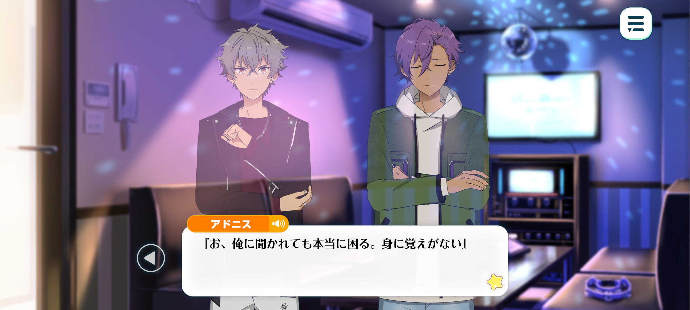
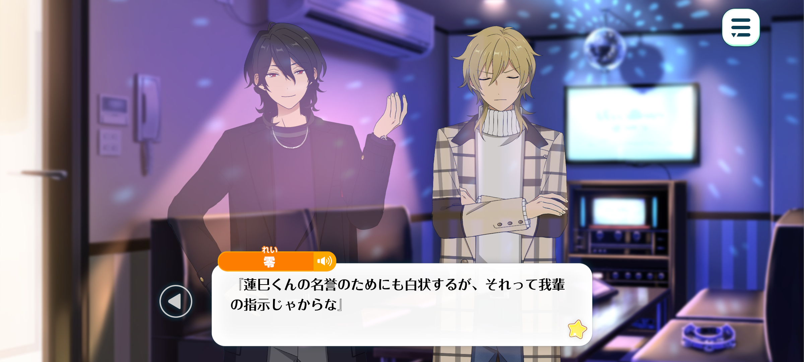

BIOHAZARD — Chapter 11



Koga: (What the hell’s goin’ on…?)
(The hell, Adonis?. You were the boss of those ‘vampires’!?)
Adonis: (I-I honestly don't know what to tell you. I have no memory of anything like that.)
(But I do remember this incident.)
(Oogami, you must remember this too. Some of the details are different, but this is something we experienced.)
(No... This is the story of how we came to be.)
Koga: (Yeah… I could never forget this.)
(Oh, right, yeah.. Though they weren't called anythin’ as weird as “vampires” back then.)
(It’s true that those guys who called themselves Sakuma-senpai’s successors were causin’ a racket downtown.)
(But Sakuma-senpai had already left to go overseas, so we couldn’t tell ‘im—)
(If he’d got pissed at them, his devotees probably would've gotten scared ‘n quieted down.)
(’Cos he wasn’t here, us lot still in Japan hadta do somethin’ ourselves.)
Rei: (Quite right. And therein lies the strange part. At this point in the timeline, I should not have been in Japan.)
(I don't recall sneaking back into the country... The very fact that I'm here tells me that things are not unfolding as I remember them.)
Kaoru: (Right? I wasn't acting as the point of contact or putting myself on the front line like this, either. I actually only got involved in this whole thing quite a bit later.)
Adonis: (The same goes for me. If I recall correctly, Hasumi-senpai heard about those unsavoury people causing trouble in the entertainment district and started taking action on his own.)
Koga: (Hmph. That guy was the vice-president of the student council, he was doin’ it for brownie points.)
(’Cos of that, everybody started thinkin’ the student council was the best thing ever.)
(On top of that, their authority increased and the scope of their activities got bigger too. That four-eyed bastard got so busy he cut ties with us.)
(But before all that, he approached Adonis and me, and things developed from there into us working together as Deadmanz.)
(Us, Deadmanz, were Sakuma-senpai’s real successors. That’s why we had t’shut up those losers who claimed they were.)
(We were mainly active in the livehouse, ‘n we got more ‘n more famous. Things were going so well that even the local shopkeepers started supportin’ us.)
Kaoru: (Compared to those hooligans wearing matching outfits, you guys were just carrying out ordinary idol activities. You were pretty much harmless.)
(From the perspective of us locals, it was actually more convenient if you guys claimed to be Rei-kun's successors.)
(Maybe it was because I was always around you guys that people were saying I was a member of Deadmanz. It started to really annoy me.)
(And Hasumi-kun just went ahead and wrote my name on the paperwork, making me one of you without even asking.)
(Maybe he thought that if he did that, it would stop me from skiving?)

Rei: (I shall defend Hasumi-kun's reputation and come clean: those were, in fact, my own instructions.)
(In fact, I agreed to return to Japan temporarily, as requested, on the condition that I be permitted to do just that. I gave those troublemakers quite the dressing-down.)
(I told them, ‘The only ones I recognise as my successors, the only ones I consider my comrades, are Deadmanz.’ Thanks to that one decisive declaration, even those troublemakers finally came to their senses.)
Kaoru: (Well, to your devotees, that probably sounded like a divine decree. It's not like anyone's gonna talk back when God himself is chewing them out, right?)
Koga: (Yeah yeah. His devotees got all depressed and fucked off somewhere else.)
Rei: (Quite. And so, the whole affair was brought to a close. All's well that ends well ♪)
Koga: (I remember it took ages to get t’that point though. Prolly ‘cos you didn’t come back home for a while, Sakuma-senpai.)
Rei: (Well, at the time, I'd grown thoroughly weary of just about everything. To be perfectly honest, I simply couldn't bring myself to care anymore.)
(But in the end, that was how the foundations of the UNDEAD we know today were laid. So perhaps all those hardships were necessary after all, wouldn't you say?)
(Hasumi-kun left before the affair had run its course, but it was through those events that the core members of UNDEAD came together.)
(Then, before we knew it, Koga had gone and changed the name to UNDEAD—)
(And so, Deadmanz was brought back to life, reborn as UNDEAD.)
Kaoru: (And now we’re here.)
Adonis: (Indeed. What we can't understand is why the events unfolding right before our eyes now contradict that version of ‘history’)
(Maybe because this is just a dream, so things are unfolding in ways we don’t understand—)
(But if this isn't just a coincidence, then what could it all mean?)